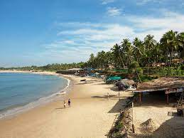
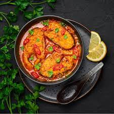

Have you ever experienced the kind of travel that leaves you utterly enchanted and rejuvenated? Well, my recent
journey to the mesmerizing land of Goa was exactly that kind of adventure. Nestled along
the western coastline of India, Goa is renowned for its pristine beaches, vibrant
nightlife, rich cultural heritage, and diverse cuisine. In
this blog, I will take you through the incredible experiences and moments that made my trip to Goa truly
unforgettable.
Chapter 1: The Arrival
As I disembarked from the plane, I could already feel the warm tropical breeze brushing against my skin. The
scent of the sea and the promise of an adventure filled the air. From the bustling Dabolim
Airport, I made my way to my accommodation, which was a charming beachfront villa.
The rhythmic sound of the waves crashing against the shore was a constant companion, making for a tranquil and
soothing atmosphere.
Arrival at Goa
Chapter 2: The Beaches
Goa is synonymous with beaches, and rightly so. With a coastline stretching over 100 kilometers, there's a
beach for every mood and preference. I kicked off my beach-hopping journey at Calangute
Beach, a vibrant stretch known for its water sports and bustling shacks.
Calangute Beach
Anjuna Beach, on the other hand, exuded a more bohemian vibe with its flea markets and
relaxed aura.
Arjuna Beach
And who could forget the serene beauty of Palolem Beach? Its crescent-shaped bay fringed
with swaying palm trees was the epitome of tropical paradise.

Palolem Beach
Chapter 3: Cultural Delights
Beyond the beaches, Goa's rich cultural heritage unfolded before me. I visited the Basilica of Bom
Jesus, a UNESCO World Heritage site renowned for its stunning Baroque architecture and the remains
of St. Francis Xavier.
Basilica of Bom Jesus
The Se Cathedral, one of the largest churches in Asia, was equally awe-inspiring with its
grandeur. To delve deeper into local culture, I explored the vibrant markets of Mapusa and Panjim, where
traditional Goan handicrafts, spices, and souvenirs tempted every passerby.
The Se Cathedral
Chapter 4: Culinary Journey
No travel experience is complete without savoring the local flavors, and Goa truly tantalized my taste buds.
The seafood was an absolute highlight – from succulent prawn balchão to the tangy fish curry
rice, each dish was a burst of coastal goodness.
Prawn balchão Dish
I even tried the famous Bebinca, a traditional Goan dessert made with layers of coconut
milk, sugar, and eggs. The beachside shacks offered an array of culinary treats, ensuring I never went hungry.

Fish Curry
Chapter 5: Nightlife and Beyond
As the sun dipped below the horizon, Goa's nightlife came alive. From beach bonfires and live music
performances to the energetic clubs of Baga and Vagator, the party scene in Goa is legendary.
Baga Tails Club
However, I also found solace in the quiet moments – watching the sunset over the Arabian Sea from the
Chapora Fort, strolling along the scenic pathways of the Dudhsagar
Waterfalls, and indulging in yoga sessions on the serene Agonda Beach.